Aviation is about extremes:
The aircraft used in this tutorial is the Cessna 172p. This is the aircraft used in many real life flight schools and a great airplane to fly.
The following articles complement this tutorial and will answer most questions that may arise as you read through.This first one in paricular is a good introduction to the airplane’s main components and controls:
This tutorial is accurate to the best of my knowledge, but will inevitably contain some mistakes. I apologize in advance for these.
There are a number of different ways to start FlightGear based on your platform and the distribution you are using
On MS Windows, FlightGear has a GUI Wizard in which you can choose your aircraft and starting postion. First choose the Cessna 172p airplane as shown below. To match this tutorial do not choose the 2D panel version. (You may however find in the future that the 2D version is more appropriate for training) Press the Next button to choose your airport.
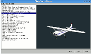
You can start from any airport for this tutorial, but I will assume that you will start from FlightGear’s default airport of San Francisco (KSFO):
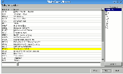
Once you have selected KSFO and pressed the Next button, you can set any number of options for the simulator. For your first flight, I suggest starting at noon. I would also recommend that you start with a small resolution of 800 × 600. Later on you can play around with the options and use a higher resolution, but this obviously adversly affects performance.Press the Run button and the FlightGear will start with the options you selected.
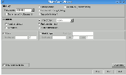
If you have problems running the latest version FlightGear on your Windows system, you may want to try an earlier version with lower graphics requirements (for example 0.9.8) You can find previous releases on the FTP mirrors mentioned at the top of the FlightGear download page: .
If you are running under Windows Me and the flight simulator suddenly starts stuttering, with the frame rate dropping, try killing all tasks except Explorer and Systray before you launch FlightGear. If one of the tasks you kill is an antivirus or such protection software, this is an obvious security risk. Also, on one Windows Me machine, a FlightGear of 800 × 600 yielded good results, while a lower resolution of 640 × 480 triggered much lower FPS levels (Frames Per Second).)
On Linux and other Unix-like systems, you may have to run FlightGear from the command line. If you have installed FlightGear but cannot find it in your menu system, try the following:
Without the –timeofday=noon option, FlightGear will start at the current time in San Francisco - often night-time if you are in Europe. To change the time of day in the simulator to daytime, select Weather->Time of Day from the menu and select Noon.
If running FlightGear from a menu (e.g. under KDE or Gnome), you can edit the FlightGear launch icon properties and change the simple fgfs fgfs command to something like fgfs –timeofday=noon –geometry=1024x768, or include whatever command options you wish. Further details of the command line options can be found in Chapter 3, Takeoff: How to start the program.
Once FlightGear is started you will see the following window and hear the sound of an engine:
On startup, the aircraft is at the end of the runway with the engine running at low power. The airplane will occasionally tremble a little, but it won’t move.
Press v, to view the aircraft from the outside. Type v repeatedly to scroll through a number of different views until you return to the cockpit. Typing V will cycle backwards through the views.):
In real life, we would have inspected the airplane all around to check everything is working, nothing is hampering the moving parts, and nothing is obstructing the instrument openings. In the simulator, this is already done for us before we start.
Hold the Page Up key down for about eight seconds. You will hear the engine sound rise.
The airplane will start accelerating down the runway. As it does so, it will drift to the left, before finally taking off, banking to the left, falling to the ground and crashing (probably).
You can see a replay of the crash using the View -> Instant Replay menu. Click the Replay button at the bottom of the dialog window, then use v and V to see the airplane from the outside. The picture below shows the end part of the flight. You can take a snapshot by typing the F3 key. You can also use the F10 key to toggle the menu bar on or off.
Having observed your crash, exit from FlightGear(using File->Quit) and restart the simulator using the same options as before.
In order to fly straight you need the airplane’s control yoke:
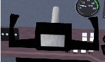
You can control the yoke using a joystick, or by moving the mouse. To use the mouse you need to be in mouse yoke mode. Get in that mode by clicking the right mouse button. The mouse cursor becomes a + sign. Move the mouse and see the yoke moving accordingly. Type v to see the plane from the outside. If you move the mouse again you will see the tail elevator and the ailerons at both wings ends move. If your viewpoint is too far from the aircraft to see any movement, type x a few times to zoom in. Type X to zoom back out. Ctrl-x returns the view to the default zoom level. Type V to change the view back to the cockpit.
Clicking the right mouse button again gets you in mouse view mode. In this mode the mouse cursor will be a ↔. sign. This allows you to look around easily. Clicking the left mouse button will re-center the view. A further right click will return you to the normal mouse mode.
To summarize, the right mouse button cycles the mouse through three modes:
Try taking off again using the mouse to control the yoke. Right-click to put the mouse in yoke mode (+pointer shape) and raise the engine throttle to maximum by holding the Page Up key down. Do not try to keep the airplane rolling straight on the runway using the mouse/yoke. Let it drift leftwards. Wait till it rises in the air. Then use the mouse to try and get the airplane to fly straight. (If you want to control the airplane on the ground see section 7.5.)
You will find that you must prevent the airplane from banking to the left:
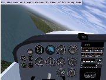
... or to the right:
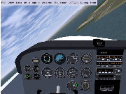
... or from plunging to the ground:
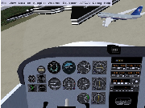
Try to fly more or less straight, with the horizon stable slightly above the airplane nose:
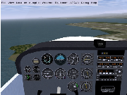
Whatever your skills at video games or simpler simulators, you will probably not succeed at first. The airplane will crash, probably quite soon after take-off. This is the moment where most candidates get desperate and abandon trying to fly a simulator or a real aircraft. Just hold tight and keep trying. Eventually you will develop a feel for the subtle control inputs required.
The most common error is moving the mouse forwards to bring the nose up. In fact, you must pull the yoke by moving the mouse backwards to do this.
Equally, when you want to lower the airplane’s nose, you must move the mouse forwards. This can seem odd, but all airplane control yokes are designed that way. With time, you will wonder how you every thought it worked any other way. You will also find that small mouse movements have a large effect on the aircraft. You may find that decreasing your mouse sensitivity may help initially.
If you have difficulty visualising this, the following analogy may help. Imagine a soccer ball is on your desk and you have “glued” your hand to the top of it. If you move your hand forwards the ball will roll forwards and your fingers will point to to the desk. If you move your hand backwards the ball will roll back and your fingers will now point up at the ceiling. Your hand is the airplane:
Another common error is the assumption that the control inputs directly match airplane bank. In other words, you believe if the control yoke is level, the airplane will fly level. This is not true. The yoke controls the rate at which the airplane banks. If the airplane is banked 20° to the left and the control yoke is level, the airplane will stay banked at 20° left until some other force affects it. If you want to return the airplane to level flight, you have to turn the control yoke slightly to the right (move the mouse slightly rightwards) and keep it slightly to the right for a while. The airplane will turn slowly rightwards. Once it is level with the horizon, bring the control yoke level too. Then the airplane will stay level (until some other force changes its orientation).
A third error is trying to find “the right position” for the yoke/mouse. Naturally, you will want to find the fine tuning that will leave the airplane fly straight. Actually there is no such ideal yoke position. The airplane is inherintely unstable in the air. You must constantly correct the airplane’s attitude and keep it flying straight with tiny movements of the mouse. This may seem to take all your concentration intially, but just like driving a car, keeping the aircraft straight and level will soon become second nature. For longer flights, you will eventually use the autopilot to keep the airplane level, but this is outside the scope of this tutorial.
To help fine-tune your senses to the control inputs required, keep your eyes on the outside scenery and not get fixated on the instruments or the yoke. Check the angle of the horizon and its height above the airplane’s nose. The horizon line and the airplane engine cover are your main flight instruments. Look at the instrument panel only once in a while.
While the mouse is in yoke control mode (+ pointer shape), don’t move it close to the FlightGear window edges. Once the mouse leaves the window, it stops controlling the aircraft, often at the worse possible moment! If you wish to use the mouse outside of the window, first go back to standard mouse mode by clicking two times on the right mouse button.
You can also control the yoke using the four keyboard arrow keys or the keypad 8, 2, 4 and 6 keys. While initially this may seem easier than the mouse, you cannot make the very fine adjustments required for accurate flying, so it is much better to persevere with the mouse.
You may hear beeping sounds while flying around the airport. These are landing aid signals. Don’t worry about them for the moment.
You will know that you have mastered this when you can make the aircraft climb steadily in the air. The next step is to learn to keep the aircraft at a constant altitude, or to make it ascend or descend slowly and under your control.
Keeping the aircraft at a constant altitude involves observing the altimeter and making small changes with the mouse forwards or backwards to stop the aircraft ascending or descending respectively.
The altimeter instrument is at the middle top of the instrument panel. The long needle shows hundreds of feet, the short needle shows thousands of feet. The altimeter below shows an altitude of 300 feet, approximately 100 meters.
As you ascend or descend the altimeter will change accordingly, turning anti-clockwise as you descend, and clockwise as you gain height. If you see the altimeter “unwinding” you will be able to tell that you are losing height and move the mouse backwards slightly to raise the nose. After a while you will notice that when flying level the nose of the aircraft is always in the same position relative to the horizon. This is the aircraft attitude for level flight. By putting the nose in that same position, you will achieve almost level flight without having to reference the instruments. From there you can fine-tune your altitude.
Beware: an altimeter does not automatically show the absolute altitude above sea level. You must adjust for the local air pressive. The little black knob on the lower left side of the altimeter allows you to adjust the altimeter. Start FlightGear and stay on the ground. Click (in normal mouse mode) inside the black knob. A click on the left half makes the altimeter turn back. On the right half the altimeter turns forward. Use that little knob to tune in the current altitude. The principle is you use the knob when you are sure about the altitude. If you know you are at 1,100 feet altitude, tune in 1,100 feet on the altimeter. Clicking with the middle mouse button makes the knob turn faster. Type Ctrl-c to see the two button halves highlighted.
To make settings the altimeter easier, airports advertise their altitude in various ways. They may provide a radio service (called ATIS in the USA) to broadcast the current air pressure at sea level. This is expressed in inches of mercury. The altimeter contains a small scale inside which is calibrated in this way. You can set your altimeter using this scale. Alternatively, if you are on the ground and know the altitude of the airport, you can simply adjust your altimeter until it displays the correct altitude.
Note that there is an important difference between “altitude above sea level” and “altitude above the ground”. If you fly near Mount Everest at an altitude of 24,000 feet above sea level (AMSL), your altitude above the ground (AGL) will be much less. Knowing the altitude of the ground around you is obviously useful.
While if you had enough fuel you could return to the same airport by flying straight head for thousands of miles, being able to change direction will make your flying more enjoyable and useful.
Once you are able to fly more or less straight, it is time to learn to turn. The principle is simple:
To turn, you do not need high levels of bank. 20° is more than enough for a safe and steady turn. The turn coordinator indicates your angle of bank by showing a depiction of your aircraft from behind. The picture below shows the turn coordinator when the airplane is banked 20° to the right. You can also tell the bank angle by observing the angle of the horizon.
Try the following: keep the airplane banked around those 20° for a few minutes and
keep your eyes outside the aircraft You will see the same ground features appear again
and again, every 120 seconds. This shows you need 120 seconds to make a 360° turn (or
60 seconds for a 180°)turn). This is particularly useful when navigating. Whatever speed
the airplane is flying, if you bank at 20ï¿ you always need 60 seconds to make a
180ï¿ turn in the Cessna 172P.
you always need 60 seconds to make a
180ï¿ turn in the Cessna 172P.
So, by banking the airplane to the left or to the right, you make it turn to the left or to the right. Keeping the airplane level with the horizon keeps it flying straight.
The little purple ball in the bottom of the turn indicator shows the sideways forces. In real life you would feel these as your turn, however it is not possible to simulate these, so you must simply keep an eye on the ball. If you turn neatly (using the rudder a little bit), the ball will remain centered. If the ball is pushed say rightwards, this means you the pilot too are pushed rightwards. Like in a car turning to the left. During a neat turn in an airplane, even a strong turn, the passengers never endure a sideways force. They are only pushed a little harder on their seats by the centrifugal force.
By experimenting you will notice you can make much steeper turns by banking the airplane to high angles and pulling back on the yoke. Turns at over 60° bank angle are the realm of aerobatics and military flying, and dangerous is aircraft such as the Cessna.
While FlightGear starts you by default conveniently lined up on the runway and ready to go, you may be wondering how to get your aircraft from its hangar, along the taxi-ways to the runway. This is taxiing.
The picture below shows the instrument. It displays how fast the engine is turning in hundreds of revolutions per minute (RPM).
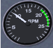
Type the Page Up key a few times, until the tachometer is showing 1,000 RPM (as shown above). If required type the Page Down key to decrease the engine speed.
At roughly 1,000 RPM, the airplane will move forward on the runway, but it will not accelerate and take off.
Type the “.”key (Shift-; on Azerty keyboards). The airplane will make a sharp turn to the right. If you keep the “.”key down the airplane will halt. When you type the “.” key, you are activating the brake on the right wheel of the airplane.
To activate the brake on the left wheel, use the “,” key.
The “,” and “.” keys simulate two brake pedals located at your feet on a real airplane. Using the throttle and the brake pedals you can control the speed of the aircraft and cause it to turn on the ground.
The brakes can be very useful when taxiing slowly on the runway. You can also steer the nose-wheel of the aircraft. In a real airplane this is done by pushing the rudder pedals with your feet. You push with your feet on the side you want to turn towards. If you don’t have real rudder pedals, there are two ways to control the virtual rudder pedals:
Start the simulator, Type v or V to view the airplane from the outside and keep x down a couple of seconds to zoom in on the airplane. Look at the front wheel and keep keypad 0 down. Then keep keypad Enter down. See the front wheel turn. Click on the right mouse button to get in yoke control mode (+ pointer shape). Keep the left mouse button down to get in rudder control mode and move the mouse to the left and to the right. Note that the rudder, that big vertical control surface at the rear of the plane, moves together with the front wheel.
I tend to control the rudder pedals using the mouse while the front wheel is on the ground and use the keypad 0 and Enter keys once it has lifted off. In other words: I keep the left mouse button down while the front wheel is on the ground. This allows for a precise and easy rudder control on the ground. Then I simply release the left mouse button once the front wheel lifts off.
Just like driving a car, it is good to know how fast you are traveling. The aviation equivalent of a speedometer is the airspeed indicator (ASI), calibrate in nautical miles per hour (knots).
A knot is 1.85325 kilometer/hour. So, if you want to have a rough idea of your speed in flight expressed in km/h, multiply the knots displayed by 2. A knot is 1.15115 miles per hour, so very roughly, 1 knot is 1 mph. Note that some aircraft ASIs (in particular the Piper J3 Cub) display mph instead of knots.
The airspeed indicator displays the speed of the aircraft compared to the surrounding air, not the speed compared to the ground like a car speedometer does. If the plane is halted on the ground and there is a 10 knot wind blowing from straight ahead, the airspeed indicator will display 10 knots airspeed, although the plane will not be moving relative to the ground.
When the airplane rolls over the runway at more than 40 knots, you must prevent the front wheel from touching the ground. The nosewheel is not designed for high speeds and in real life would shimmy and wear out.
During take off, once over 40 knots you can make the front wheel leave the ground by pulling back gently on the control yoke. Don’t turn sharply at high speed on the ground. Doing so may cause the aircraft to tip over.
The picture below shows the front wheel slightly lifted. Don’t overdo this. Keep the airplane’s white nose cover well below the horizon. You just need to lift the plane’s nose very slightly.
Question: if the front wheel no longer touches the runway, how do you steer the airplane? Answer: still using the rudder pedals. As mentioned above, the rudder pedals are linked to both the nose-wheel and the tail rudder, that big vertical moving part at the tail of the plane:
At airspeeds above 40 knots, the rudder has enought air-flow over it to steer the airplane.
Note the front wheel and the tail rudder don’t make the airplane turn at exactly the same rate. So when the rudder takes over the front wheel, you must adapt the rudder pedals angle. That means fast typing keypad 0 and keypad Enter (or hold the left mouse button down and tightly control the rudder with the mouse).
Once you’ve become familiar with the nose-wheel and rudder, you can use these new controls to keep the airplane straight on the runway during take-off.
Say the airplane is heading too much to the right. You type keypad 0 a few times to make it turn back to the left. Don’t wait till the aircraft has straightened up completely. Type keypad Enter before the aircraft reaches the direction you wish to travel. Otherwise you will find that you will over-correct and have to turn back again. If you use the mouse, such corrections are much easier and more precise.
To summarise: two methods exist to steer the airplane on the ground: the differential brakes on the side wheels and the rudder pedals. This control redundancy is very common in aviation. If one method fails, you still have another method available to perform the task.
You may be wondering why the aircraft drifts to the left when it rolls on the ground, forcing your to compensate with a little push on the right rudder pedal? The main reason is the flow of air produced by the propeller. It blows along the airplane body, but also corkscrews around the airplane fuselage. The upper part of that slight vortex pushes the vertical tail to the right. This causes makes the front of the aircraft to yaw to the left.
You can center all yoke and rudder controls by typing 5 on the keypad. This is a good preflight precaution. Sometimes it can “save your life” in flight if you find yourself with controls all over the place!
As with turning on the ground, there are two methods of turning in the air. You can use the wing ailerons (steered by the yoke/mouse) as described above or you can use the tail rudder (steered by the rudder pedals / the keypad keys /0 and Enter.
Why two ways? Partially for redundancy, but mainly because they are complementary. The main effect of the rudder is yaw (rotation around the vertical axis), while the main effect of the ailerons is roll (rotation around the longitudonal axis).
Using the yoke/mouse/ailerons allows for efficient, fast, reliable and comfortable turns.
When you turn in flight, using the ailerons, you still need the rudder a little bit. You add a little bit of rudder. This allows you to compensate for the adverse yaw created when you roll using the ailerons. In a real aircraft, you can feel this sideways motion. In the simulator, you can check this visually on the turn coordinator. In the picture below the little ball is pushed rightwards during a strong turn to the right using the ailerons. That means you the pilot endure a rightwards force too. You can compensate this by pushing the right rudder pedal (type the keypad Enter key a few times). In normal flight you should use the rudder to keep the little ball centered.
So, in normal flight use the ailerons to turn, while close to the ground at low speed use the rudder. However, one method never completely cancels out the other. You still need the rudder at high altitudes and speeds. Reciprocally you have to use the ailerons a little bit when close to the ground, to keep the wings level with the horizon.
Even when taxiing, you should use the ailerons. Otherwise, strong winds can blow the aircraft onto its side. To counteract this, your should turn the ailerons into the wind. This raises the aileron in the wind, helping to keep the wing down.
You should avoid making quick and agressive movements of the rudder. On the ground at high speed this can make the airplane turn too sharply. In flight at low speed it can cause a very dangerous type of stall. In flight at high speed it can cause all kinds of aerodynamic and physical discomfort. Instead, make gentle movements of the rudder.
I recommend you practise turning with the rudder in flight. Fly at a low speed of about 70 knots. Try to keep the altitude stable by increasing and decreasing the engine power. Use the rudder to turn towards a ground feature and maintain a heading, then turn the aircraft towards a new heading. See how the plane yaws. Learn to anticipate rudder control. Don’t try to make steep turns. Use the yoke/ailerons to keep the wings level constantly.
Wieheisterology comes from the German phrase “Wie heißt Er” – “What’s that name”. This section is about gauges, switches and controls of the aircraft. While in the simulator you can take off and land a basic airplane with just the engine throttle and the yoke, but you will need all the controls to perform securely and efficiently.
An airplane engine is designed for simplicity, reliability and efficiency. Rather than use advanced electronic ignition and fuel injection systems found in modern cars, they instead use older technology that doesn’t rely on electrical power. That way, the plane can still fly even if it suffers complete electrical failure.
On the bottom left, below the instrument panel you will find the magneto switch and engine starter:
To see the switch, either type P to get the schematic instrument panel or type Shift-x to zoom out (x or Ctrl-x to zoom back in).
You can move the switch with the { and } keys (use the Alt Gr key on Azerty keyboards).
You are probably aware that the fuel inside a car engine is ignited by electric sparks. Modern car engines use electronic ignition. An airplane engine uses a more old-fashioned (but more reliable) magneto ignition instead. For redundancy, it contains two such magnetos: the “left” one and the “right” one. When you change the magneto switch on OFF, both magnetos are switched off and the engine will not run. With the magneto switch on L you are using the left magneto. On R you are using the right magneto. On BOTH you use both. In flight you will use BOTH.
Given that you use both magnetos in flight, why have the switch? The reason is that during your pre-flight checks you will verify that each of the magnetos is working correctly. To do this, increase the RPM to about 1500 then switch the magneto switch to L and observe the tachometer. You should observe a slight drop in RPM. If the engine cuts out, the left magneto is broken. If you do not see an RPM drop, then the switch may be faulty, as both magnetos are still switched on. You can then perform the same test on the right magneto. Of course, in the simulator, the magnetos are unlikely to fail!
Should one of the two magnetos fail in flight, the other one will keep the engine running. The failure of one magneto is rare, the failure of both simultaneously is almost unheard of.
You may have typed { to shut the engine down. To start the engine again after doing so, type } three times in order to put the magneto switch on BOTH. Then use the starter motor by pressing the s for a few seconds, till the engine is started.
You can also turn the magneto switch and start the engine by clicking left and right of the switch in normal mouse mod). Type Ctrl-c to see the two click sides highlighted by yellow rectangles.
If you turn the switch to OFF, the engine noise stops. If you quickly turn the switch back to L, the engine starts again as the propeller is still turning. If you wait for the propeller to stop, placing the switch on L, R or BOTH won’t start the engine. (Once the engine is halted, always place the magneto switch to OFF.)
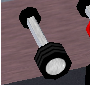
You already know that you increase the engine power by pushing that throttle rod in (Page Up key). You decrease the power by pulling the control out (Page Down key). You can also click left and right of the lever (middle mouse button for quicker moves, Ctrl-c to highlight the left and right halves).
What does “increase the power” actually mean? Does it mean you increase the amount of fuel delivered to the engine? Yes, but this is not enough to fully understand what you are doing. You need to be aware that the engine is also fed with a huge amount of air. The engine’s cylinders burn an mixture of fuel and air. Fuel alone wouldn’t burn. Only a mixture of fuel and air can detonate and move the engine pistons. So when you push the throttle in, you increase both the fuel and the air fed to the engine.
The amount of air compared to the amount of fuel is critical. The proportion of the two has to be tuned closely. This is the purpose of the mixture lever. The picture below displays the mixture lever, pulled out far too much.
When the mixture lever is fully pushed in, you feed the engine with an lots of fuel and little air. This is known as a “rich” mixture. When the lever is pulled out completely, there is an excess of air, known as a “lean” mixture. The correct position to produce maximum power is in between these two extremes, usually quite close to fully pushed in.
When you start the engine and when you take off, you need a fuel-rich mixture. That means the mixture lever should be pushed in. A fuel-rich mixture allows the engine to start easily. It also makes the engine a little more reliable. The drawback is that a part of the fuel is not burned inside the engine. It is simply wasted and pushed out the exhaust. This makes the engine more polluting, it decreases the energy the engine can deliver and it slowly degrades the engine by causing deposits of residues inside the cylinders.
Once in normal flight, you have to pull the mixture lever a little, to get a more optimal mixture. Check this out by doing the following. Start the simulator. Put the parking brakes on with key B (that is Shift-b). Push the throttle in to its maximum. The engine RPM should now be close to the maximum. Slowly pull on the mixture lever (using the mouse in normal pointer mode). You will see the RPM increases a little. You get more power, without increasing the fuel intake. You waste no fuel and it pollutes less. If you continue to pull the mixture lever, the RPM will decrease back away, because now there is too much air. The excess of air slows the explosions down inside the cylinders and decreases the explosion temperature, hence the thermodynamic yield decreases. You have to tune in the optimal mixture. For thermodynamic reasons, the best mixture isn’t exactly at maximum power - it is better for the engine to be running very slight richer or leaner than maximum power. This also avoids the possibility of the fuel detonating explosively damaging the engine. You can find the maximum power point by the fact you get the highest RPM. (Another method is to check the engine exhaust temperature. Roughly, this is the point at which you get the highest temperature.)
The mixture control allows you to burn less fuel for the same speed and distance, and therefore fly farther and pollute less. However, if you mis-manage it, it can cause serious problems. Suppose you go flying at high altitude and pull out the mixture lever accordingly. At high altitude there is less oxygen available so the correct mixture will be quite lean - i.e. with little fuel being used. Then you descend back in order to land. If you forget to push the mixture lever in as you descend, The fuel/air mixture will become far too lean and the engine will simply halt.
When landing, you have to tune back in a mixture that is a little too rich in fuel. This means pushing the mixture lever in. That way the engine becomes a little more reliable and will be better adapted to a decrease in altitude.
I wrote above that placing the magneto on OFF is not the right way to stop the engine. The right method is to pull the mixture lever. First pull the throttle out completely, to get the engine to minimum power and fuel consumption. Then pull the mixture lever, till the engine stops because the mixture contains too much air. This ensures the engine doesn’t get choked by waste fuel residues. Finally, turn the magneto switch to OFF to ensure the engine won’t start again accidentally.
An important warning: you may think the RPM indicator reflects the engine power. Wrong. Two things make the RPM increase: the engine power and the airplane speed. To check this, fly to a given altitude then pull the engine power to minimum. Try out diving to the ground then rising back to altitude. You will see the RPM varies significantly as does your airspeed. It rises while diving and decreases while climbing.
One pitfall of this is when you intend to tune the engine power in for landing. Suppose you’re descending towards the airport, flying fast. You know the ideal RPM for landing is around 1,900 RPM. So you pull the throttle till you get 1,900 RPM. You think you tuned in the appropriate RPM. You think you shouldn’t bother any more about it. But when you level off, the plane’s speed starts to decrease, along with the RPM. A few minutes later, you get the low flight speed you wanted. You don’t see the RPM is now far too slow. You will either lose altitude or stall. Or both. Be cautious with the throttle and with the RPM indicator. Either pull on the throttle more steadily or be mentally prepared to push it back in quickly.
Say you are flying with full engine power. Dropping the nose a little makes you lose altitude and raising the nose a little makes you gain altitude. You may think this is quite straightforward. The plane travels in the direction it is heading; the direction the propeller is heading. This is not the best way to think about it. This model would be fine for a rocket, but not for an airplane. A rocket is lifted by its engine, while a plane is lifted by its wings. That’s a huge difference.
Get a big rigid square of cardboard, hold it horizontally in your hand with your arm stretched out and make it do fast horizontal movements while rotating your torso. When the cardboard moves flat through the air, it experiences no lift force. If you twist your arm slightly to give the cardboard a slight upward angle, you will feel it tends to lift in the air. There is an upward force acting on the cardboard. That’s the way a wing holds a plane in the air. The wings have a slight upward angle and lift the airplane. The more angle you give the cardboard, the more lift force. (Till you give it too steep an angle. Then you will rather feel a brake force. The cardboard is “stalling” (see below).)
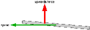
What matters is the angle the wings travel through the air. This is the angle of attack.
I wrote above that when the wings travel through the air with no angle of attack, they don’t produce lift. This is false. It would be true if the wings were a flat plate like the cardboard. But they aren’t. The wings are a slightly curved airfoil. This makes them create lift even when traveling through the air at no angle of attack. Actually, even with a little negative angle of attack they still create a lift force. At high speed the airplane flies with the wings slightly angled towards the ground!
The angle at which the wings travel through the air matters. Something else matters too: the speed. Take the cardboard again in your hand. Hold it with a given slight angle and don’t change that angle. Move it at different speeds through the air. The faster you move the cardboard, the more upward force it experiences.
To make things a little more complicated: when rising in the air, the airplane tends to lose speed. When descending, it tends to gain speed.
That’s all a matter of compromises. If you want to fly at a constant altitude and at a given speed, you will have to tune both the engine power and the yoke/elevator (or better: the trim (see below)), till you get what you want. If you want to descend yet keep the same speed, you have to push the yoke a little and decrease the engine power. And so on. You constantly have to tune both the engine power and the yoke. However, during a normal flight you can simplify this by simply choosing a comfortable engine power level then relying on the yoke and trim for altitude.
A very interesting exercise you can perform with the simulator is to fly straight with full engine power. Get maximum speed while keeping in horizontal flight. Then decrease the engine power to minimum. Pull steadily on the yoke to keep the plane at constant altitude. The plane slows down steadily, meanwhile you have pull more and more on the yoke to stay level. Since the speed decreases the lift from the wing will decrease, but you compensate the loss of speed by increasing the wing angle of attack. This proves the plane does not necessarily travel in the direction its nose is heading. In this experiment we make the nose rise in order to stay at constant altitude. Once the plane is flying very slowly, and the nose is very high, you may hear a siren yell. That’s the stall warning (see below). This indicates that the angle of attack is too high for the airfoil to produce lift. The wings are no longer producing lift and the plane quickly loses altitude. The only way to correct this is push the yoke forwards to reduce the angle of attach, making the nose drop, then apply full power to gain speed and finally bring the yoke carefully back to level flight.
Question: is it better to control the airplane’s speed and altitude with the yoke or with the throttle? Answer: it depends on what exactly you intent to do and on the situation you are in. In normal flight, as said above, you tend to set a comfortable engine power level, forget about it and rely on the yoke and trim. During take off and landing the procedures are quite strict about the use of yoke and throttle. You do the opposite: control the speed with the yoke and trim, control the altitude and descent speed with the engine throttle. This will be discussed further below.
The flaps are situated at the rear of the wings, either side of the aircraft fuselage.
You deploy the flaps and retract them back in by using the flaps control lever:
You can either click on it with the mouse or use the [ and ] keys. Key [ to retract the flaps one step, ] to deploy them one step at a time. Type v to view the plane from the outside and try out [ and ]. (On the schematic instrument panel the flaps lever is located at the lower right.)
In the Cessna 172P. there are four flaps settings:
The flaps are somewhat delicate. Do not deploy the first step of flaps above 110 knots. Do not deploy the second or third stage of flaps above 85 knots.
The flaps create large amounts of drag on the aircraft and brake the plane at high speed. This is one more reason not to forget to pull the flaps back in once you fly above 85 or 110 knots.
To check the flaps position visually, either use the mouse view mode to look at the back of the wing, or type Shift-right arrow to shift the view to the right and then quickly Shift-up arrow to get back to front view.
Flaps increase wing lift by altering the shape of the airfoil. The wing lifts more at a given speed with the first stage of flaps set. Hence you will get in the air a little sooner during take off. It also has the effect to make the plane fly with a lower nose attitude. This is useful as it provides a better view of the runway when taking off or landing.
The flaps also increase drag on the aircraft. The second and third stage of flaps produce much more drag than lift, so they are used to brake the plane. This is particularly useful when landing, because the airplane glides very well. If you cut down the engine power completely, the plane will descend, yet but too slowly. You need to deploy two or three flaps steps in order to brake and really descend towards the ground.
The fact that the flaps brake during landing makes you need more engine power during the landing. This can seem odd. Why not simply throttle the engine down to minimum and use less flaps steps? The answer is that it is better to have a strongly braking plane and lots of engine power, as the plane reacts faster to your commands. Should the engine fail, then just retract flaps as needed and glide to the runway.
What can you do if you have full flaps extended and need to increase your rate of descent further? Slowly push the rudder pedals on one side. This will make the plane present its flank to the air stream and brake. Compensate the turning by using the ailerons (yoke). This is known as side-slipping, and is a very effective way to lose height progressively as it is easy to stop at any point.
An aircraft relies on the smooth flow of air over the surface of the wing to produce lift. However, if the wing is at too high an angle of attack, this flow is broken, and the wing no-longer produces lift. With no lift, the aircraft cannot fly, and quickly drops back to earth. This is known as a stall.
A stall is an emergency situation, whatever the While it can happen at any speed, it commonly occurs in slow flight. A given aircraft has a specific stall speed, at which no angle of attack can produce enough lift. You should always keep your aircraft well above the stall speed. To help, aircraft are equipped with stall sirens that sound when the angle of attack is approached.
If you encounter a stall, the remedial action is to immediately drop the nose, and apply full power, bringing the nose level when flying speed has been attained again. However, doing so will cause the aircraft to lose altitude, which you may not have to spare when landing or taking off!
A spin occurs when one wing stalls before the other, which can occur in a steep turn at low speed. As one wing is still flying, the aircraft turns around the stalled wing, spinning tighter and tighter. To get out of a spin, you need to apply rudder to straighten out the spin into a normal stall, then recover as above.
Aircraft like the Cessna 172 and Piper Cub, have benign stalls, and are unlikely to enter a spin. High performance jets, such as the F16 have much more agressive stalls, and can easily enter a spin.
To practise this in the simulator, do the following:
You can also experiment with stalls with different flap settings, and high speed stalls by making abrupt attitude changes.
Experiment with different aircraft. Compared with the Cessna 172 the Cessna Citation jet, stalls much more agressively and with little warning..
The trim is the dark big vertical wheel with gray dots located at the middle below the instrument panel:
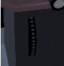
On FlightGear, the keys Home and End adjust the trim. Home rolls the wheel upwards while the End rolls the wheel downwards. You can also click on the upper or lower half of the trim wheel.
In first approximation, the trim does the same as the yoke: it acts on the elevator. Turning the trim wheel downwards is the same as pulling on the yoke. Yet there is a key difference between the trim and the yoke. The trim remains in position after you make a change, while the yoke only continues to affect the elevator while you apply pressure and returns the elevator to neutral when you release it.
During cruise flight, the required elevator position to keep the aircraft at constand altitude will not be completely neutral - it will vary depending on the air outside the aircraft, the current fuel level, and the payload. Obviously, holding the yoke continually to retain a constant attitude would quickly become tiring. By using the trim to “trim out” the elevator force required for cruise flight, the yoke can be kept neutral.
During take off the trim should be neutral. Otherwise you may find that it either refuses to take-off with the normal level of yoke control, or takes off too quickly.
During landing, try to get the yoke/mouse/elevator towards neutral position by tuning the trim. This makes making small adjustments to your attitude and position easier. On the Cessna 172p this means trim on neutral. On the Cherokee Warrior II this means the trim a little “pulled”.
The trim wheel movement is much slower than the yoke, allowing for delicate changes in trim. Be patient.
Knowing the direction you are going is obviously a good idea. There are three basic ways to determine the direction you are flying:
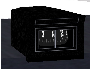
Finally, let’s have a look at the instrument panel, combining the instruments described above with some new ones.
Let us start with the most important instruments any simulator pilot must know, these are known as the “holy six” or the “six-pack” . In the center of the instrument panel (Fig. 5), in the upper row, you will find the artificial horizon (attitude indicator) displaying pitch and bank of your plane. It has pitch marks as well as bank marks at 10, 20, 30, 60, and 90 degrees.
Left of the artificial horizon, you’ll see the airspeed indicator. Not only does it provide a speed indication in knots but also several arcs showing characteristic velocity rages you have to consider. At first, there is a green arc indicating the normal operating range of speed with the flaps fully retracted. The white arc indicates the range of speed with flaps in action. The yellow arc shows a range which should only be used in smooth air. The upper end of it has a red radial indicating the speed you must never exceeded, unless you want to break up the plane in mid-flights…
Below the airspeed indicator you can find the turn indicator. The airplane in the middle indicates the roll of your plane. If the left or right wing of the plane is aligned with one of the marks, this would indicate a standard turn, i.e. a turn of 360 degrees in exactly two minutes.
Below the plane, still in the turn indicator, is the inclinometer. It indicates whether the rudder and ailerons are co-ordinated. During turns, you always have to operate aileron and rudder in such a way that the ball in the tube remains centered; otherwise the plane is skidding. A simple rule says: “Step on the ball”, i.e. step onto the left rudder pedal when the ball is on the left-hand side.
If you don’t have pedals or lack the experience to handle the proper ratio between aileron/rudder automatically, you can start FlightGear with the option --enable-auto-coordination.
To the right-hand side of the artificial horizon you will find the altimeter showing the height above sea level (not ground!) in hundreds of feet. Below the altimeter is the vertical speed indicator indicating the rate of climbing or sinking of your plane in hundreds of feet per minute. While you may find it more convenient to use than the altimeter in certain cases, keep in mind that its display usually has a certain time-lag.
Further below the vertical speed indicator is the propellor tachometer, or RPM (rotations per minute) indicator, which displays the rotations per minute in hundreds. The green arc marks the optimum region for cruise flight.
The group of the main instruments further includes the gyro compass being situated below the artificial horizon. Besides this one, there is a magnetic compass sitting on top of the panel.
Four of these gauges being arranged in the from of a “T” are of special importance: The air speed indicator, the artificial horizon, the altimeter, and the compass should be scanned regularly during flight.
Beside the six-pack, there are several supplementary instruments. To the very left you will find the clock, obviously being an important tool for instance for determining turn rates. Below the clock there are several smaller gauges displaying the technical state of your engine. Certainly the most important of them is the fuel indicator - as any pilot should know.
The ignition switch is situated in the lower left corner of the panel (cf. Fig. 4). It has five positions: “OFF”, “L”, “R”, “BOTH”, and “START”. The first one is obvious. “L” and “R” do not refer to two engines (as the Cessna 172 only has one) but the two magnetos, providing redundancy in the case of a failure.. The two switch positions can be used for test puposes during preflight. During normal flight the switch should point on “BOTH”. The extreme right position is for using a battery-powered starter (operated with the “s” key).
The handle below the yoke is the parking brake. In the vertical position, the parking brake is ON. The parking brake is operated with the “B” key.
The right hand side of the panel is occupied by the radio stack. Here you find two VOR receivers (NAV), an NDB receiver (ADF) and two communication radios (COMM1/2) as well as the autopilot.
The communication radio is used for communication with air traffic facilities; it is just a usual radio transceiver working in a special frequency range. The frequency is displayed in the LEDs. Usually there are two COM transceivers; this way you can dial in the frequency of the next controller to contact while still being in contact with the previous one.
The COM radio can be used to listen to the current weather conditions at an airport, known as ATIS. To do this, simply dial in the ATIS frequency of the relevant airport. You can find this by selecting ATC/AI->Frequencies from the menu, and selecting the 4-letter ICAO code of a nearby airport.
Each COM radio has two frequencies configured - an ‘active’ frequency which the pilot is transmitting and receiving on, and a ‘standby’ frequency which may be changed. In this way, you can continue to listen on one frequency while tuning another one.
You can change the radio frequency using the mouse. For this purpose, click left/right to the circular knob below the corresponding number. The corresponding switch left to this knob can be used for toggling between the active/standby frequency.
Use of the autopilot and radio navigation equipement is covered in later tutorials. For the moment you can ignore these radio instruments as long as you are strictly flying according to VFR (visual flight rules).
By now you will be able to keep on runway while taking off by using the rudder and you’re able to fly straight, descend, climb and make gentle turns. This section will describe a slightly more realistic approach to taking off and landing, and introduce some of the more subtle concepts you should be aware of.
The following general rules apply during a normal take-off:
So, you need to take off and rise in the air at a steady speed of around 75 knots. However, when you raise the nose slightly at 40 knots, the aircraft will probably take-off at around 55 knots. To accelerate quickly to 75 knots, lower the nose slightly immediately on take-off, then raise it once 75 knots has been achieved. You are using the yoke to control the speed of the aircraft.
Putting this all together with what you have learned previously, a normal take-off using the mouse will consist of the following:
The rules for landing are almost identical to that of take-off, but in reverse order:
Landings are much easier if you have an aiming point picked out on the runway. By observing the aiming point, you can easily tell if you are descending too fast or too slowly. If the aiming point appears to move upwards, you are descending too fast,
Obviously, you need to be lined up with the runway.That means your flight direction has to match the middle line of the runway (drawing (a) below). In order to arrive at this, don’t aim at the start of the runway (b). Rather aim at a fictitious point well in front of the runway (c). And begin to turn gently towards the runway well before you reach that fictitious point (d). Note the turns and bankings you make for these flight corrections are often very soft. You wouldn’t even notice them on the turn coordinator. This is one example where you better rely on the outside horizon line than on the inside flight instruments.
A straight in landing using the mouse would consist of the following:
Once the plane is halted or at very low speed, you can release the b key and add a little engine power to taxi to the parking or hangar.
To shut the engine down:
You must be mentally prepared to abort landing any time the landing doesn’t look good, or due to external factors such as:
To abort the landing, apply full power (hold PgUp), raise the nose to climb, and once you are climbing, retract the flaps (key[).
Landing is much harder than taking off. Landing on a large runway, such as KSFO (San Francisco, the default) is much easier than smaller runways such as KHAF (Half Moon Bay, about 10 miles to the south west of KSFO).
To practise landings, use the command line below in a terminal window to start the simulator in flight and heading for the runway. The airplane is placed 5 miles ahead of the runway, at an altitude of 1500 feet and a speed of about 120 knots.
fgfs –offset-distance=5 –altitude=1500 –vc=120 –timeofday=noon
Approaching to land at 65 knots instead of 70 knots allows to use a much shorter runway length. However, this requires better control, particularly as it is much closer to the stall speed. It is quite different from landing at 70 knots.
Consider a hot air balloon. Think of it as being in the middle of a gigantic cube of air. The cube of air may move at high speed compared to the ground, but the balloon itself is completely static in the middle of the cube. Whatever the wind speed, persons aboard a hot air balloon experience not a breath of wind.
In the same way, an aircraft flies in the middle of a gigantic cube of air and flies relative to that air mass. The motion of the cube of air relative to the ground has no effect on the aircraft.
You, the pilot, on the contrary, are interested in the speed of the surrounding air compared to the ground. It can make you drift to the left or to the right. It can make you arrive at your destination much later or much sooner than planed.
When the wind blows in the same direction as you fly, the speed of the wind adds itself to the airspeed of the plane. Hence you move faster compared to the ground. You will arrive earlier at your destination.
When the wind blows in the opposite direction (towards the nose of the plane), the speed of the wind subtracts itself from the airspeed of the plane. Hence you move slower compared to the ground. You will arrive later at your destination and have more time to enjoy the landscape.
The two cases above are quite simple. More complex is when the wind blows towards the side of the airplane. Consider the diagram below.
How much to the left or to the right of the object must you head? At what angle? Serious pilots use geometry and trigonometric computations to calculate the correct angle. You need no computations at all to fly roughly straight. The trick is to choose an aiming point in the direction you wish to fly, then observe how it moves. You will become aware if you are drifting leftwards or rightwards. Then let your instinct slowly head the plane to the right or to the left to compensate the obvious drift. To begin with, you may need to think about what you are doing. Very soon this will become automatic, just like when you learned to fly straight. You will no more keep the plane headed towards the object. You will rather keep it flying towards the object.
The faster the flight airspeed compared to the wind speed, the less correction you will need.
Taking off when the wind is coming from the side is tricky. Airport designers avoid this by placing runways so that they face into the prevailing wind. Often airports have multiple runways, placed such that there will be a runway facing straight into wind as much of the time as possible.
Taking off with a wind blowing straight towards the nose of the aircraft makes life easier as it is the speed of the wing relative to the air that causes lift. When there is no wind, the aircraft must accelerate to 55 knots to take off. However, if there is a 10 knot head-wind, the aircraft has an airspeed of 10 knots standing still and only has to accelerate to 45 knots relative to the ground to take off. This shortens take-off distances.
Just as a headwind shortens take-off, a tail-wind increases take-off length. Anything more than a knot or two makes a huge difference to take-off distance. As (most) runways can be flown from either end, you can easily take off from the other end of the runway and benefit from the headwing.
The main way to know the wind direction and speed is to go to the control tower or ask the control tower by radio. A necessary and complementary tool are the windsocks at both ends of the runway. They show the wind direction and speed. The longer and the stiffer the windsock, the more wind there is. The windsock on the picture below shows an airspeed of 5 knots:
Unfortunately, sometimes there isn’t a runway facing the wind, and you have to take off when the wind is blowing from the side.
The technique is as for a normal take-off with two changes:
Landing in a crosswind is very similar to the take-off:
The technique described here is the slip landing. Another crosswind landing technique is the crab landing.
Under 10 knots wind the Cessna 172p seems not to need particular precautions when taxiing. Yet any sudden increase in wind speed can tilt it and tumble it over. So best apply the recommendations whenever there is wind.
To train taxiing on the ground when there is wind, configure the simulator for a strong wind, like 20 knots. Such a wind can tilt the plane and blow it away tumbling any moment. One single error during taxiing and the plane is lost.
Main rule is you must push the yoke towards the wind. This deserves some physical explanation:
If you want to move towards the wind, you will need more engine power. When the wind blows from the rear you may need no engine power at all. Always keep the engine power to the minimum needed.
Especially when turning, move very slowly. Make little changes at a time. Take your time and closely survey the yoke angle. Constantly keep it pushed towards the wind. Constantly try to reduce the engine power. Keep in mind using the brakes too firmly may shortly tilt the plane at an angle that allows the wind to tilt it and blow it away.
An autopilot is not an “intelligent” pilot. It just takes over simple tasks for the pilot. You still are the pilot aboard and have to keep aware of everything. Be prepared to shut the autopilot down as they often go wrong, both in real life, and in the simulator.
The autopilot is mounted to the right of the yoke:
Switch it on by pressing the AP button. The autopilot then controls the roll of the aircraft. It keeps the wings level with the horizon. This is displayed in the picture below by the “ROL” marking. To switch the autopilot off press AP again.
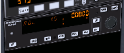
If you press the HDG button the autopilot will try to keep the plane flying towards the direction tuned on the directional gyro by the red marking (see section 7.7.6). “HDG” stands for “heading”. Press again on the HDG button to get back to roll control mode (or AP to switch the autopilot off).

The buttons ALT, UP and DN are used to tell the autopilot either to control the vertical speed VS or the altitude ALT.
For more advanced use of the autopilot, see the reference document for the autopilot modeled in the Cessna 172:
This tutorial has introduced you to the basics fo flight in the Cessna 172. From here you can explore the many features that FlightGear has to offer.
Once you have mastered the content of this tutorial, you may want to look at the other tutorials in this Manual, covering flying to other airports, flying using instruments when clouds obscure the ground, and flying helicopters.
This tutorial has skipped over a number of topics that a real-life pilot would have to consider:
This tutorial has also not covered features of more advanced aircraft, including:
I wish to thank:
 ric Cloth for the web space used by this
tutorial.
ric Cloth for the web space used by this
tutorial.
I cross-checked all the data about the Cessna 172p, a pilot friend verified I did not write too much rubbish and I made numerous virtual test flights. This section contains less reliable data about other airplanes based on my experience in the simulator. You may find it useful as an introduction to those airplanes but bear in mind my only goal was to make flights that seem OK and acquire basic knowledge.
The Cherokee Warrior II has some advantages upon the Cessna 172p. Thanks to its low wings it is far less sensitive to crosswind. Fully extended flaps are provide more braking and allow it to land on a much shorter distance.
Take off is the same as for the Cessna 172p in FlightGear. In real life their take off checklists are not exactly the same.
You have to get used to some minor differences of the Cherokee Warrior II for the landing:
In real life, an advantage of the Cessna 172p upon the Cherokee Warrior II is the fuel reservoirs of the Cessna are located in the wings close above the center of the plane and higher than the engine. What’s more an automatic system switches between the reservoirs. That means you almost don’t have to bother for the way the fuel gets to the engine in flight. On the contrary, on the Cherokee Warrior II the reservoirs are located separately, on both wings and lower than the engine. That means you have to constantly switch between the two reservoirs in flight. Should one reservoir become much lighter than the other, this would destabilize the airplane. The fact the reservoirs are lower than the engine means you have to control the fuel pumps and the backup fuel pumps.
Some links:
The Piper J3 Cub is a very different airplane from the Cessna 172p and the Cherokee Warrior II. The Cessna 172p and the Cherokee Warrior II are nose-wheel airplanes, while the Piper J3 Cub is a tail wheel airplane. Take off and landing with tail wheel airplanes is more difficult. You have to tightly use the rudder pedals when rolling over the runway. The yoke often needs to be pulled backwards to the maximum. The Piper J3 Cub is a good introduction to tail-wheel aircraft and it is quite easy to take off and land provided you follow an appropriate procedure. Stall speed seems to be a little below 40 mph (the airspeed indicator is in mph) (about 27 knots). Take-off is below 50 mph.
My take off procedure for the Piper Cub is to fully pull the yoke backwards then throttle the engine to maximum. Once the front wheels clearly rises from the ground, gently push the yoke back to neutral, towards a normal flight close above the runway. Let the plane accelerate to 50 mph. Then pull the yoke to keep a little more than 50 mph while rising in the air.
The landing procedure is quite different to that of 172, as the aircraft is very light, and has no flaps.
The take off procedure mentioned above is symmetrical to the first landing procedure. There exists a second take off procedure, symmetrical to the second landing procedure. Yet I don’t succeed it properly so I won’t write about it.
Take off on a jet is easy but you must have fast reflexes. My favorite jet on FlightGear is the A-4 Skyhawk. You get it with the –aircraft=a4-uiuc parameter on Linux, provided it is installed.
This is the “calm” procedure to take off:

The “nervous” take off procedure is the same but you push in full engine power. The plane takes off quickly and you need to settle a very steep climb angle to keep 200 knots. Best retract the landing gear immediately.
You don’t land a jet the same way you land a little propeller airplane. My way to land the A-4, inspired by some texts I found on the Web, is this:
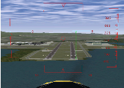
Let’s explain this. The two horizontal lines labeled “0” show the horizon line. Rather they show where the horizon would be if the Earth was flat. When your eyes aim at those “0” lines, you are looking horizontally. Look at the dotted red lines labeled “-10”. A feature on the ground situated there is situated 10° below the ideal horizon. In other words: when you look to objects “hidden” by the lines labeled “0”, you have to lower your eyes of 10° to look at objects "hidden" by the dotted lines labeled “-10”. This implies, and it is very important, that a person in a rowboat, “hidden” by the dotted lines labeled “-10”, has to rise his eyes up 10° to look at your plane. He sees you 10° above the horizon. In the picture above, the start of the runway is situated at 64% of the way towards the red “-10” dotted lines. That means you have to lower your eyes of 6,4° to look at the runway start. This also means that if you start now to descent towards the runway start, the descent path will be of 6,4° (too steep). So, the HUD allows to measure precisely the angle of the descent path. On a jet plane you need an angle of 2,5° (up to 3°), that is 25% of -10° (up to 30%).
The HUD in a real jet contains a symbol to show towards what the airplane is moving. It is shown in the picture below. When you are flying at constant altitude, that symbol is on the ideal horizon line. Once you dive towards the runway start, you simply have to place that symbol on the runway start. This is quite an easy and precise way to aim at the runway start. (The diamond in the center of the FlightGear HUD sometimes can help but it does not have the same purpose. It shows towards what the airplane nose is pointing. For example is you descent towards the ground at low speed, the symbol would be somewhere on the ground while the FlightGear diamond will be up in the sky.) (By the way, the HUD on the virtual B-52 on FlightGear has that symbol. It is great to use while landing.)

Also, a real HUD shows a dotted line at -2,5°, to help find the correct descent path. Simply keep that dotted line on the runway thresh-hold.
In additional to airspeed, military fast jet pilots rely on using the correct angle of attack during approach. The Angle Of Attack (AoA) is the angle at which the wings are pitched against the relative airflow. The advantage of keeping to an optimal AoA is that the optimal AoA for landing does not depend on the plane load, while the optimal airspeed speed does. By ensuring that the AoA is correct for every landing, you will land at the correct speed, whatever the plane load.
The Angle of Attack is displayed within the HUD, and/or as a set of three lights shown below. When the upper ∨ is lit, your angle of attack (AoA) is too high and you need to pitch down. When the lower ∧ is lit, your AoA is too low and you need to pitch up. The center ○ indicates your the AoA is OK. Obviously, as you pitch up or down your airspeed and descent rate will change, so you will need to change your throttle setting appropriately.
The Cessna 172 and the A-4 Skyhawk are two extremes. Most other airplanes are in-between these two extremes. If you trained them both (and one or two tail wheel airplanes), you should be able to find out how to take off and land most other airplanes.
160 knots seems an appropriate landing speed for the F-16 Falcon. Also you need to throttle down the engine to minimum just before the plane should touch the runway. Otherwise it will hover over the runway. Don’t bother for the flaps. It seems they are deployed automatically with the landing gear. (Read the section 7.7.4 about the stall).
140 up to 150 knots and all 8 flaps steps deployed seem appropriate to land the virtual Boeing 737. But don’t trust me especially on that one. I just made a few experiments and didn’t search for serious data. The landing speed varies a lot depending on the plane load, I suppose 140 knots is for a plane with no load. The Boeing 737 seems to like a gentle rounding before the wheels touch the runway. Start the rounding early.
In the take off procedure for the Cessna 172 and the A-4 Skyhawk I recommend you pull the yoke/mouse/elevator to 1 2 the total way, from the start on. This seems to be a bad practice on the Pilatus PC-7. Keep the elevator neutral. Let the plane accelerate and wait till the speed gets over 100 knots. Then pull calmly on the yoke. During landing, deploy full flaps once you start plunging to the runway but don’t decrease the engine throttle. Decrease it only when the hovering above the runway starts. 100 knots seems a good landing speed.
For the Cessna 310 too you better leave the elevator neutral during the acceleration on the runway. The plane will raise its nose by its own provided you deployed one flaps step. (If you keep the yoke pulled from the start on, the nose will rise sooner and you will get yawful yaw problems.)
(Some virtual airplanes, like some big airliners or fast aircraft, need faster physical computations. Then add the –model-hz=480 parameter to the command line. If the plane is difficult to control during landings, try this.)
The angle at which you land a Cessna 172p is far steeper than the narrow 2,5° for a jet. Nevertheless you are allowed to land the Cessna at a narrow angle too. (Provided the terrain around the runway allows for this, of course.) If you have passengers who have ears problems with the variation of air pressure…
Should you ever get a chance to pilot a P-51 Mustang, just say no. It is quite dangerous to take off and land. That’s the kind of airplane you fly only when your country is in danger. You need a lot of training. Yet once in the air the P-51 Mustang seems no more dangerous to its pilot than other common military airplanes. It is quite easy to pilot.
At low and medium altitude the P-51 wasn’t better than the Spitfire and the Messerschmitts. The big difference was at high altitude. The P-51 kept efficient and maneuverable while enemy fighters were just capable to hang in the air. This was an advantage at medium altitude too because the P-51 was able to plunge towards enemy airplanes from high altitude. Another key difference was the P-51 is very streamlined. Hence it was capable to fly much further than the Spitfire. These two differences let the P-51 Mustang fulfill its purpose: escort Allied bombers all the way to their targets in Germany. This allowed the bombings to be much more efficient and contributed to the defeat of the Nazis.
To get the The P-51D Mustang in Linux use the –aircraft=p51d command line parameter.
To take off the P-51D Mustang in FlightGear, deploy one flaps step, pull and keep the yoke completely backwards, push the engine throttle to maximum and keep the left mouse button pressed to control the rudder and keep on the runway. Once you reach exactly 100 mph, suddenly push the rudder 1/3 of its total way to the right. Immediately release the left mouse button and push the yoke to rise the tail (don’t push it too much, as the sooner the wheels leave the ground the better). From now on, keep the left mouse button released. Only make very short adjustments to the rudder. Let the plane rise from the runway and get to altitude at a speed of say 150 mph. Don’t forget to retract the landing gear and the flaps.
Don’t make too steep turns. You would loose control on the plane and crash.
To land, deploy full flaps and lower the landing gear from the start on. 130 mph speed seems fine, up to 140 mph. Make an approach from 1,000 feet altitude and a dive at a low angle, like for a jet. Once over the runway, shut the engine down completely (key{). Don’t hover over the runway. Get the wheels rolling soon (like for a jet). Hold the left mouse button down to steer the plane using the rudder. Once the tail sinks in, briskly pull the yoke (left mouse button shortly released) to force the tail on the runway. Go on steering the plane using the rudder. Now the tail is firmly on the ground, use the brakes if you want.
The B-52F bomber implemented in FlightGearis a success. It is one of my favorite airplanes. I’m sorry it was conceived to terrify me. One single B-52 bomber can wipe out every main town of my country and rise a nightmare of sicknesses and children malformation for centuries. All B-52 bombers united can wipe out mankind and almost every kinds of plants and animals on Earth.
The differences between the virtual B-52F bomber and the Cessna 172p are these:
This is my procedure to take off the virtual B-52F:
To land, the B-52F’s HUD offers that great airplane-shaped symbol I talked about in the section about jets. So you just have to put that symbol on the airplane threshold (a few pixels further seems optimal) and keep the runway start 2,5° below the ideal horizon line. 130 up to 140 knots seems a good landing speed. (Instead of the speed you can make use of the AOA indicator displayed on the schematic instrument panel (P). ). Simply keep the AOA at 3°. I must confess I prefer to tune the speed rather than the AOA.) If the plane gets to the runway at 130 up to 140 knots, simply “let it smash” on the runway. Otherwise, if the speed is higher, make a rounding and a short hover. The brakes seem to be very effective b). They allow to stop the B-52F on roughly the same short runway length as the Cessna 172p.
Replays of the flights are a delight. They allow to check the plane body left the runway and landed back parallel with it. One of the points of view is situated inside the B-52F rear turret, which allows you to be your own passenger and to compare what you see with what you experienced as a passenger in airliners. The key K allows to visualize the airplane trajectory.
To cause an accident with the B-52 do this: